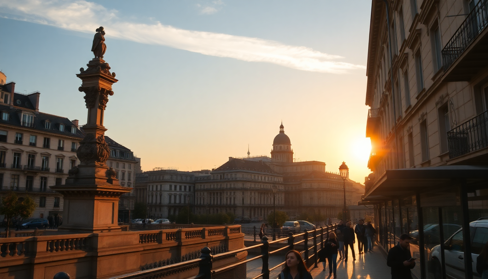

Three French Cities Worth Your Time: Paris, Lyon, Nice

I spent three weeks hopping between Paris, Lyon, and Nice last spring, and I came away with a clear ranking of how to split your time. Each city has a distinct rhythm — you don't visit them for the same reasons. Paris is the big-ticket show, Lyon is the food town that locals actually rave about, and Nice is where you go when you want to sit still and watch the Mediterranean do its thing. Here's what I learned, with specific names and honest opinions.
Why visit Paris first?
Because it's the gateway, and because you'll want to front-load the crowds before you get tired of them. I landed at Charles de Gaulle, took the RER B into the city, and dropped my bags at Hôtel des Grands Boulevards in the 2nd arrondissement. It's a small property — 37 rooms — and the location made it easy to walk to the Louvre and the Palais Royal without dealing with the Metro crush.
The Louvre itself is worth it, but only if you go early. I booked the first slot at 9 AM and still had to dodge selfie sticks in front of the Mona Lisa. Skip the midday visit entirely. Instead, spend that time at Musée d'Orsay — the impressionist collection is better curated and the building (a converted train station) is more interesting than the pyramid.
For food, I ate at Bistrot Paul Bert in the 11th. It's not trendy, it's not Instagrammable, and the waiters are brusque. The steak-frites was the best I had in Paris. For a splurge, Le Comptoir du Relais in Saint-Germain does a lunch menu that's actually affordable — 45 euros for three courses, and the duck confit was perfect.
- Where to stay: Hôtel des Grands Boulevards (2nd arr.) or Hôtel Jeanne d'Arc (Le Marais) for a quieter vibe.
- What to skip: The line for the Eiffel Tower elevator. Walk underneath it instead — the view from the Trocadéro is better than the top.
- Best Metro tip: Buy a carnet of 10 tickets at any station machine. Cheaper than single tickets and works for buses too.
Is Lyon worth the train ride from Paris?
Yes, and it's a short one. The TGV from Gare de Lyon to Lyon Part-Dieu takes exactly two hours. I booked a first-class ticket on Trenitalia (the French-Italian joint service) for 35 euros because I booked two weeks out. Worth the upgrade for the quiet car and the free coffee.
Lyon is smaller, calmer, and more walkable than Paris. The old town (Vieux Lyon) is a UNESCO site, but the real draw is the food. I did a bouchon crawl — these are the traditional Lyonnaise eateries, heavy on pork and potatoes. Le Musée in the Presqu'île district served a tablier de sapeur (breaded tripe) that I still think about. Café Comptoir Abel is touristy but the quenelles de brochet (pike dumplings) are the real thing.
The city's two rivers — the Rhône and the Saône — create a natural divide. The Presqu'île between them is where most bars and restaurants cluster. I stayed at Hotel Carlton Lyon on the Rue de la République — a bit corporate, but the beds were firm and the breakfast buffet had fresh madeleines.
- Best free activity: Walk up to the Basilique Notre-Dame de Fourvière. The view over the city is worth the 287 steps. No ticket needed.
- Don't miss: The Halles de Lyon Paul Bocuse food market. Go hungry. The cheese stalls and the oyster bar at Le Bar à Huîtres are excellent.
- Nightlife tip: Skip the clubs. Grab a bottle of Beaujolais and sit on the banks of the Saône near the Passerelle Saint-Vincent. Locals do this all summer.
How do you get from Lyon to Nice without wasting a day?
Take the train. The TGV from Lyon Part-Dieu to Nice Ville runs about four hours. Scenic, comfortable, and you arrive right in the city center. I booked a standard seat for 45 euros. Avoid the bus — it's cheaper but takes seven hours and the A8 motorway is boring.
What should you actually do in Nice?
Nice is a beach town that thinks it's a city. The Promenade des Anglais is the main drag, and it's fine for a morning walk, but the water is pebbly, not sandy. Bring water shoes. I stayed at Hotel Windsor on Rue Dalpozzo — a 15-minute walk from the beach, with a small garden pool that was a lifesaver in June.
The old town (Vieux Nice) is where the energy lives. The Cours Saleya market runs every morning except Monday. I bought socca (chickpea flatbread) from Chez Pipo for 3 euros and ate it standing up. The Musée Matisse in the Cimiez neighborhood is worth the uphill walk — the building is a 17th-century villa and the collection is small but well-edited.
For day trips, I took the train to Villefranche-sur-Mer (10 minutes, 2 euros) and Antibes (20 minutes). Villefranche has a real sandy beach and a quieter vibe. Antibes has the Picasso Museum and a better market than Nice's. If you have a full day, Monaco is 30 minutes by train — the casino is overrated but the Oceanographic Museum is genuinely impressive.
- Where to eat: La Pèche in the port area for grilled fish. Bistrot d'Antoine for daube (beef stew). Both are under 30 euros for a full meal.
- What to skip: The hop-on-hop-off bus. The tram system is cheaper and covers the same route.
- Beach hack: The public beaches near the Negresco hotel are free but crowded. Walk east toward the port — the beaches get emptier the further you go.
When is the best time to visit each city?
Paris is best in late April or early October. May is crowded, June is packed, and July is a zoo. Lyon is a year-round city — the food markets are indoor, so weather barely matters. I'd avoid August when many bouchons close for holiday. Nice is best in September or May. July and August are hot (35°C) and the beaches are shoulder-to-shoulder. June was warm but manageable when I visited.
What about getting around within each city?
Paris has the Metro — it's efficient but hot in summer. Buy a Navigo Easy card at any station. Lyon's tram system is newer and cleaner than the Metro. Nice's tram line runs from the airport to the city center in 25 minutes — cheaper than the 35-euro airport bus. I walked everywhere in Nice because the city is flat and compact.
FAQ
Is Paris overrated? Parts of it are. The Eiffel Tower queue, the Louvre crowds, and the overpriced crêpes near Sacré-Cœur are genuine wastes of time. But the neighborhoods — the Marais, the 11th, Belleville — are worth the trip. Skip the tourist checklist and walk the streets. That's where Paris works.
How many days should I spend in each city? Four days in Paris, two in Lyon, three in Nice. That gives you time for a day trip from Nice (Villefranche or Antibes) and a slow morning in Lyon at the market. Any less and you're rushing. Any more and you'll be bored in Nice.
Is Nice safe for solo travelers? Yes. I walked alone at night in the old town and along the Promenade and never felt unsafe. The tram is well-lit and runs until late. Standard city precautions apply — keep your wallet in a front pocket and don't leave your bag unattended on the beach.
Conclusion
- Start in Paris for the big museums and the energy, but don't overplan — leave time to wander the neighborhoods.
- Lyon is the sleeper hit. Go for the food, stay for the walkability. It's the most underrated city in France.
- Nice is a base for the Côte d'Azur, not a destination in itself. Use it to explore the smaller coastal towns.
- Trains beat flights every time. The TGV network is fast, reliable, and drops you in city centers.
- Book accommodation near a market or a tram stop. You'll eat better and move faster.